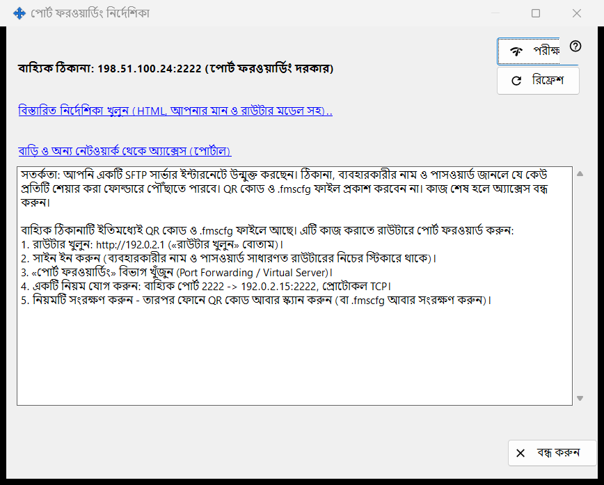
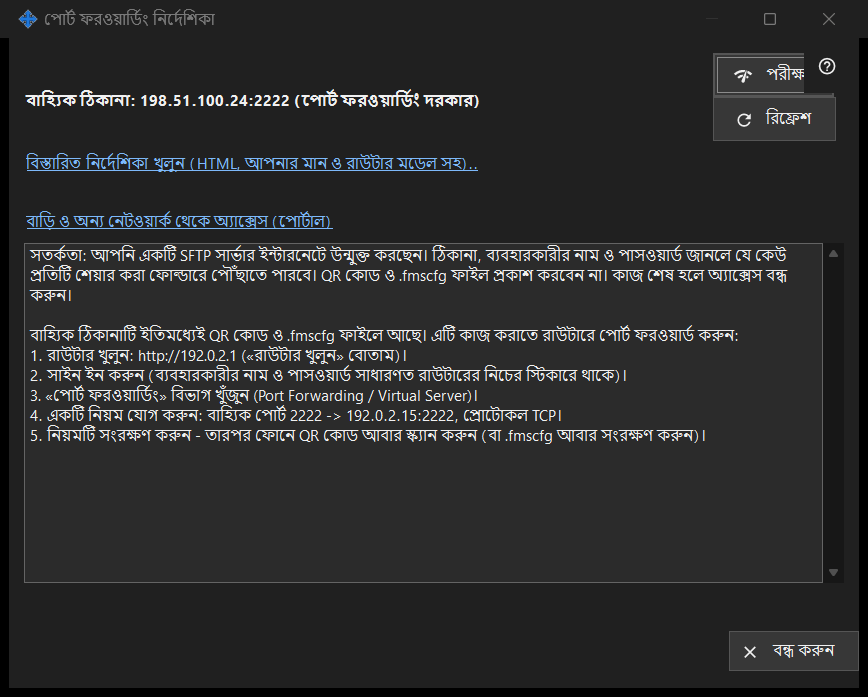

পোর্ট ফরওয়ার্ডিং নির্দেশিকা
এটি কীসের জন্য
শেয়ারকে আপনার বাড়ির নেটওয়ার্কের বাইরে থেকে পৌঁছানোর যোগ্য করতে সাহায্য করে। এটি বাহ্যিক ঠিকানা দেখায় এবং পোর্ট নিজে থেকে খুলেছে নাকি রাউটারে ফরওয়ার্ড করতে হবে তাও জানায়, এবং একটি পরীক্ষা ও বিস্তারিত নির্দেশিকা দেয়। এটি মূল উইন্ডোর কীভাবে ইন্টারনেট অ্যাক্সেস সেট করবেন বোতাম থেকে খোলে।


এই ক্রমে
- আগে শেয়ারিং শুরু করুন; নইলে উইন্ডো তা করতে বলে।
- অবস্থার লাইনগুলো পড়ুন: পৌঁছানো যায়, CGNAT-এর পিছনে, বা পোর্ট ফরওয়ার্ডিং দরকার।
- ফরওয়ার্ডিং দরকার হলে বিস্তারিত নির্দেশিকা খুলুন এবং রাউটারে নিয়ম তৈরি করুন।
- এই পিসি থেকে ঠিকানা পরখ করতে পরীক্ষা চাপুন।
- ফোনের Wi-Fi বন্ধ রেখে মোবাইল ডেটায় ফোন থেকে নিশ্চিত করুন।
উপাদানসমূহ
অবস্থা
উইন্ডো বাহ্যিক ঠিকানা শনাক্ত করে এবং এগুলোর একটি বলে: ইন্টারনেট থেকে পৌঁছানো যায়, বাহ্যিক ঠিকানা: .. (পোর্ট ফরওয়ার্ডিং দরকার), বাহ্যিক ঠিকানা অজানা - রাউটারে দেখুন। অথবা CGNAT-এর পিছনে - বাইরে থেকে পৌঁছানো যায় না। পোর্ট নিজে থেকে (UPnP) খুললে রাউটার সেটআপ লাগে না, তবু এটি কাজ করছে কি না তা নিশ্চিত করতে পারে কেবল মোবাইল ডেটায় থাকা ফোন। রিফ্রেশ শনাক্তকরণ আবার চালায়।
রাউটার ও নির্দেশিকা
রাউটারের লাইন তার ঠিকানা দেখায়, বা খোঁজার সময় রাউটার শনাক্ত করা হচ্ছে.. দেখায়। বিস্তারিত নির্দেশিকা খুলুন (HTML, আপনার মান ও রাউটার মডেল সহ).. লিংকটি একটি স্থানীয় HTML নির্দেশিকা খোলে; খোলা না গেলে উইন্ডো তা জানায়। বাড়ি ও অন্য নেটওয়ার্ক থেকে অ্যাক্সেস (পোর্টাল) লিংকটি ব্রাউজারে সহায়তা পোর্টালের সংশ্লিষ্ট পৃষ্ঠা খোলে।
পরীক্ষা
এই পিসি থেকে বাহ্যিক ঠিকানা পরখ করে এবং জানায়: SFTP সার্ভার উপলব্ধ, পোর্ট খোলা, কিন্তু SFTP সাড়া দেয়নি, বন্ধ সংযোগ (সম্ভবত সংযোগের সীমা), অথবা কোনো উত্তর নেই। এটি চূড়ান্ত নয়: অনেক রাউটার ভিতর থেকে নিজের বাহ্যিক ঠিকানায় অনুরোধ প্রত্যাখ্যান করে, তাই নির্ভরযোগ্য যাচাই হলো মোবাইল ডেটায় ফোন।
নিরাপত্তা
ইন্টারনেটে SFTP খুলে দিলে ঠিকানা, লগইন ও পাসওয়ার্ড যে জানবে সে-ই প্রতিটি শেয়ার করা ফোল্ডার পাবে। QR কোড বা .fmscfg ফাইল প্রকাশ করবেন না এবং কাজ শেষ হলে শেয়ারিং বন্ধ করে দিন। বন্ধ করুন উইন্ডো ছেড়ে যায়।
ম্যানেজার সেটিংস · SFTP শেয়ারিং সেটিংস · এক্সচেঞ্জ সার্ভার সেটিংস